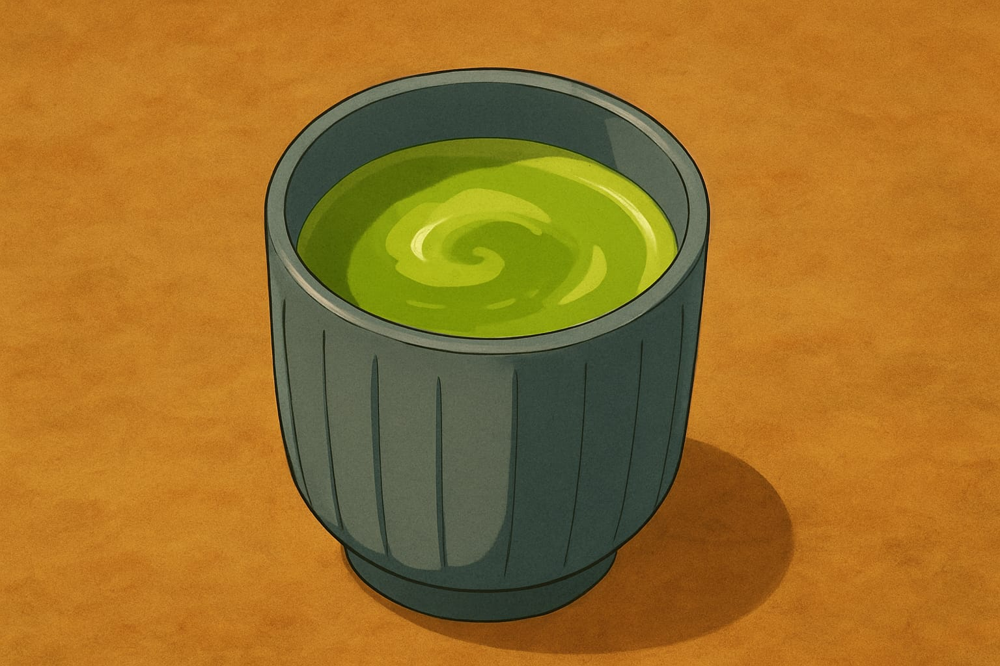
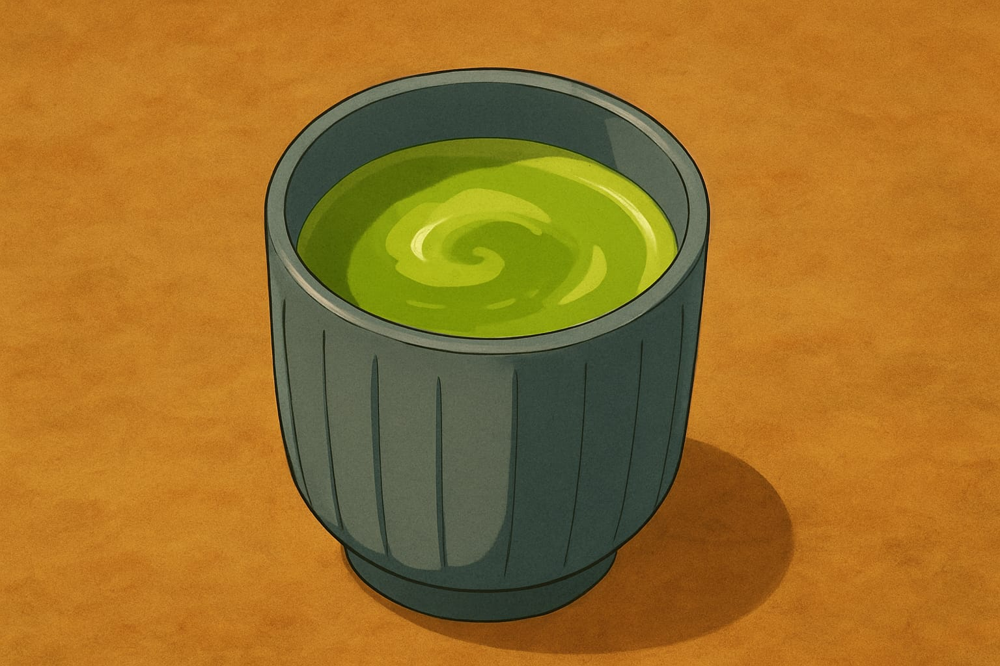

Nossa História
Após lutar e vencer na guerra ninja nosso fundador "Neji Hyuuga" sentiu que era hora de buscar novos horizontes. Perder seu pai e queridos amigos fez com que percebesse que gostaria de ter divido mais momentos ao lado deles. Em especial, um bom café da manhã.
Nossa missão
Proporcionar aos nossos clientes um ambiente acolhedor e refeições calorosas. Com as técnicas de nossos ancestrais para produzir produtos de qualidade, mas também, abraçar as novas gerações com criatividade e inovação sem que a tradição se torne um fardo.
Horário de Funcionamento
| DIA DA SEMANA | HORÁRIO DE FUNCIONAMENTO |
|---|---|
| Segunda a Sábado | 06:00 às 22:00 |
| Domingo | FECHADO |
Cardápio
| CATEGORIA | PRODUTO | DESCRIÇÃO | PREÇO |
|---|---|---|---|
| Pães | ANPAN | Pão doce recheado com pasta de feijão vermelho | R$4,50 UN |
| Pães | MELONPAN | Pão doce com casca crocante e interior macio | R$4,50 UN |
| Sanduiches | PÃO COM OVO | Pão com ovo feito pelo grande chefe Itachi | R$5,00 UN |
| Sanduiches | RAIO BURGUER | Pão, hambúrguer, tomate, queijo e alface | R$15,00 UN |
| Doces | SONHO | Pão doce frito recheado de creme | R$2,50 UN |
| Doces | BOLO DE MORANGO | Bolo com massa de chiffon, recheado com morango | R$7,00 (FATIA) |
| Bebidas | CHÁ VERDE | Feito com folhas da planta “chá-da-india” | R$3,50 UN |
| Bebidas | CAFÉ | Café preto sem açucar | R$4,00 UN |
| Bebidas | COCA-COLA ZERO | Refrigerante geladinho | R$7,00 UN |
| Sopas | OSHIRUKO | Caldo doce de feijão azuki com mochi | R$12,00 UN |
Mais Vendidos
- Pão com ovo do chefe
- Anpan
- Chá Verde
- Sopa de Feijão Vermelho
 



Se não acredita vem ver!
Em nossa padaria temos a honra de trabalhar com o mestre das chapas, Uchiha Itachi. Observe um pouco de suas habilidades ao prepar um pequeno café da manhã: